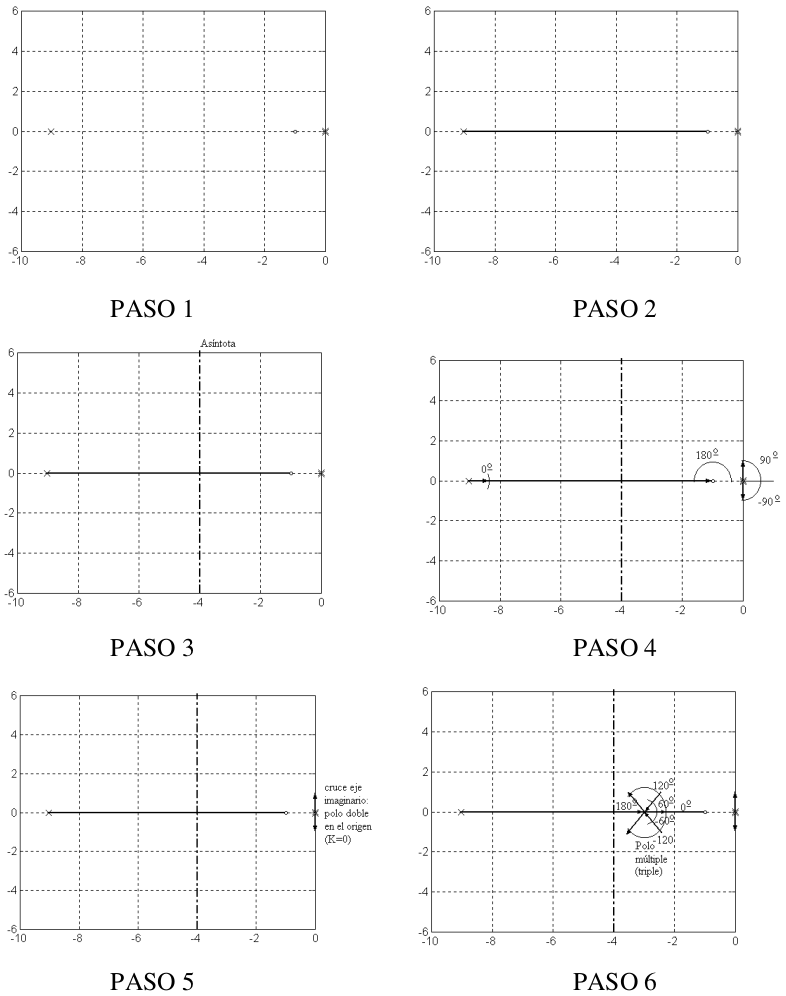
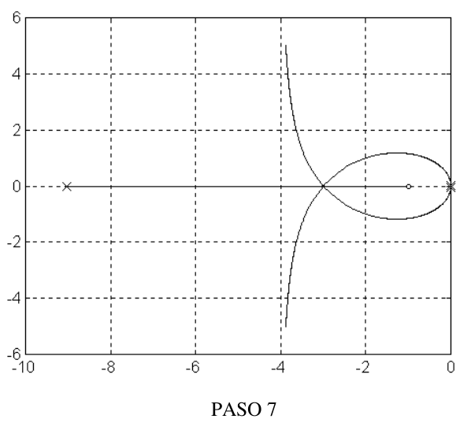

Pasos para trazar el lugar geométrico de las raíces#
PASO 1. Dibujamos los polos y ceros de la función de transferencia a lazo abierto (con x y o) respectivamente#
PASO 2. Encontramos la parte del eje real de los lugares geométricos de las raíces#
Si tomamos un punto de prueba sobre el eje real, la contribución en ángulo de los ceros o polos complejos conjugados se anularán, puesto que uno de los ángulos se cancela con el de su conjugado.
Entonces debemos considerar solo los polos y ceros que se encuentran sobre el eje real. Los mismos aportarán 0° si el punto de prueba está a la derecha del polo o cero, y aportará con -180° o +180° si el punto de prueba está a la izquierda del polo o cero, respectivamente.
Conclusión: Es lugar geométrico de las raíces, aquel lugar del eje real que está a la izquierda de un número impar de polos y ceros.
PASO 3. Dibujamos las asíntotas para valores grandes de K#
Cuando \(K\) tiende a infinito, la ecuación \(1 + KG(s) = 0\) se satisface solamente si \(G(s) = 0\). Esto puede ocurrir de dos maneras:
En los ceros de \(G(s)\), o sea las raíces del polinomio \(b(s)\).
Escribamos la ecuación característica de la siguiente manera:
Si \(n > m\), \(G(s)\) tiende a cero cuando \(s\) tiende a infinito.
Para \(K\) grandes, \(m\) ceros se cancelarían con \(m\) polos, y los \((n-m)\) polos restantes se verían agrupados como en un solo polo múltiple en \(\alpha\):
Tomemos un punto de prueba \(s_o=re^{j\phi}\), para un valor grande y fijo de \(r\), y \(\phi\) variable. Aplicando el criterio de la fase, tenemos:
El ángulo \(\phi_l\) nos dará el ángulo que forman la asíntotas, que serán de:
El lugar de origen de las asíntotas está en \(s_o=\alpha\). Averigüemos cuánto vale \(\alpha\):
Es fácil de deducir que \(a_1=-\sum_{i=1}^np_i\), el opuesto de la sumatoria de los polos a lazo abierto.
Por otro lado, la ecuación característica la podemos escribir de la siguiente manera:
Si \(m < (n-1)\), tenemos que \(K\) no afectará el coeficiente de \(s^{n-1}\), que será \(a_1\); y por lo tanto, si llamamos \(ri\) las raíces de esta ecuación, tenemos que:
Ahora, para \(K\) grandes, m de las raíces coinciden con los ceros \(zi\), y \((n-m)\) son del sistema asintótico \(\dfrac{1}{(s-\alpha)^{n-m}}\), cuyos polos sumarán \((n-m)\alpha\). Por lo tanto:
Entonces, el centro de las asíntotas estará dado por:
PASO 4 (solo para mejor resultado en esos puntos). Calculamos los ángulos de salida y de llegada de polos y ceros#
Esto lo analizamos considerando un punto de prueba muy cercano al polo o al cero, y aplicando el criterio de fase.
PASO 5 (es importante este valor). Calculamos los puntos donde los lugares geométrico de las raíces cruzan el eje imaginario#
Esto podemos obtener determinando el \(K\), para el cual el sistema se torna inestable (con el criterio de Routh), y luego determinando las raíces de la ecuación característica para ese \(K\).
Otra manera de determinarlo es reemplazar en la ecuación característica \(s\) por \(j\omega\), de esta manera tenemos dos ecuaciones (una para la parte real de la ecuación y otra para la imaginaria), con dos incógnitas: \(K\) y \(\omega\).
PASO 6. Estimamos la localización de las raíces múltiples, especialmente en el eje real, y determinamos los ángulos de llegada y salida de estos lugares#
Supongamos que para un determinado \(K\), existen raíces múltiples. Llamemos en ese caso \(r_i\), a las raíces de la ecuación característica para ese \(K\), o sea:
Llamemos \(r_{\alpha}\) a la raíz múltiple, entonces habrá un término de la productoria que será: \((s- r_{\alpha})^a\), con \(a \ge 2\). O sea:
Derivemos esta productoria, y evaluémos a la misma en \(s = r_\alpha\):
Aplicando este resultado a la ecuación característica, y sabiendo que se debe cumplir en \(s = r_\alpha\):
y
Que es equivalente a
Si dividimos esta ecuación por \(-b(s)\), obtendremos que:
Entonces tenemos que la condición de raíces múltiples es la siguiente:
PASO 7. Completamos el dibujo, combinando los resultados anteriores#
Trazado del lugar geométrico de las raíces para ganancias negativas#
Para ganancias negativas, \(K < 0\), el criterio de la fase (o del ángulo) cambia por:
puesto que la ecuación característica es \(1-(-K)G(s)=0\).
Dejamos como ejercicio al lector analizar como afecta este cambio a los siete pasos descriptos anteriormente para el tazado geométrico de las raíces.
Ejemplo de trazado de lugar de las raíces#
Tenemos la siguiente función de transferencia a lazo abierto:
En la figura que sigue mostramos los resultados de los sucesivos pasos seguidos para el trazado del lugar geométrico de las raíces para esta función de transferencia.
Para el paso 3, el cálculo del centro y ángulo de las asíntotas son:
Para el paso 4, el cálculo de los ángulos \(\alpha\) de salida de los polos en el origen (suponiendo un apartamiento pequeño de los mismos), aplicando el criterio del ángulo:
De la misma manera podemos determinar el ángulo de salida del otro polo, y el de llegada al cero.
Para el paso 6, determinamos la raíz múltiple realizando la derivada, la cual vale \(-\sigma_m=-3\). Podemos comprobar que la multiplicidad de esta raíz es 3, ya que la derivada segunda de \(\frac{-1}{G(s)}\) con respecto a \(s\) evaluada en ese punto también es cero. Por lo tanto los ángulos \(\beta\) de entrada a ese polo múltiple es:
De la misma manera podemos determinar el ángulo de salida del otro polo, y el de llegada al cero.
Para el paso 6, determinamos la raíz múltiple realizando la derivada, la cual vale \(\sigma_m=-3\). Podemos comprobar que la multiplicidad de esta raíz es 3, ya que la derivada segunda de \(\frac{-1}{G(s)}\) con respecto a \(s\) evaluada en ese punto también es cero. Por lo tanto los ángulos \(\beta\) de entrada a ese polo múltiple es:
Y los ángulos \(\gamma\) de salida son:
{kind=link}

Figura 51 Pasos del lugar de las raíces#
{kind=link}

Figura 52 Resultado final#
En Python, lugar de las raíces se puede resolver fácilmente usando el módulo de control.